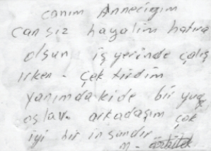

O yıllarda fotoğraf arkasına yazarlardı.
Teyzemin anneanneme gönderdiği fotoğrafın arkası
Aile büyüklerinden birilerinin çerçevelenmiş portre resimleri, o eve misafirliğe gelen yakın-uzak akrabaları çok duygulandırır ve bu resmi ne hikmetse hepsi çok beğenirlerdi. Üzülür, hüzünlenirler ve onlardan anılar akıllarına gelip birbirlerine anlatırlardı. En sonunda da ev sahibinden bu resimden kendilerine de çoğaltmalarını isterlerdi. Böyle bir imkân pek olmadığı için bu konuşmalar çoğunlukla havada, o resim o duvarda kalırdı.
Pencereler odanın tamamını kaplar, boydan boya uzanırdı camlar. İster leb-i derya olsun, ister komşunuzun mutfağı olsun manzaranız, camların büyük olmasına özen gösterirdi inşaatçılar. Bu kocaman pencereleri kadife perdeler, çiçek desenleri ya da boylamasına çizgileri ve gökkuşağını andıran renkleriyle kumaş perdeler süslerdi.
Vitrinler eve orantılandığında epey büyüktü. İçlerinde yine aile fotoğrafları bulunur, hiç kullanılmayan ne kadar küçük eşya varsa burada sergilenirdi. İçlerini envai çeşitte danteller süsler, fotoğrafların, ufak heykelciklerin altlarında üstlerinde bu dantellerden olurdu. Kristal bardaklar, kadehler, türlü süs eşyaları, turistik hatıralar hep burada sergilenirdi. Kaplamaları değişik renklerdeki suntalara geçirilen kontrplaklarla yapılırdı. Çeşitli renk ve desenlerde modelleri vardı.